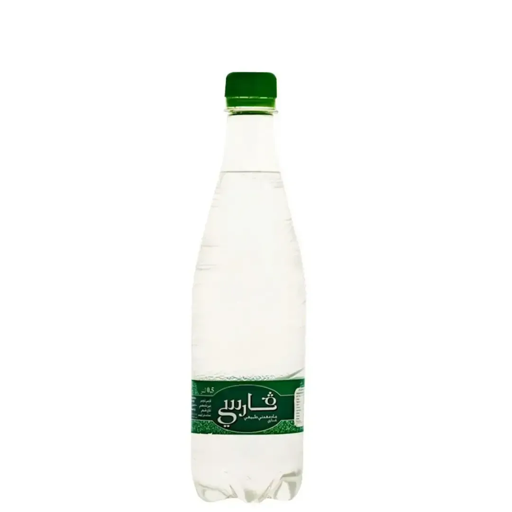

Prix de l'eau Garci en Tunisie
Bouteille et stika, mis à jour le 25 septembre 2026
L'eau Garci est vendue en 50 cl et 1 L chez Carrefour, Géant et Monoprix. La bouteille la moins chère coûte 0,460 DT (50 cl chez Géant). Une stika de 6 bouteilles de 1 L revient à 3,720 DT (6 × prix bouteille). Au litre, Garci 50 cl est classée 2e sur 3 marques en 50 cl.
| Format | Bouteille | Stika | Magasins |
|---|---|---|---|
| 50 clgazeuse 0,920 DT/L | 0,460 DT | 5,520 DT* 12 bouteilles | Géant 0,460 DT · Carrefour 0,480 DT · Monoprix 0,480 DT |
| 1 Lgazeuse 0,670 DT/L | 0,670 DT | 4,020 DT* 6 bouteilles | Monoprix 0,670 DT |
| 1 L 0,620 DT/L | 0,620 DT | 3,720 DT* 6 bouteilles | Carrefour 0,620 DT · Géant 0,690 DT · Monoprix 0,740 DT |